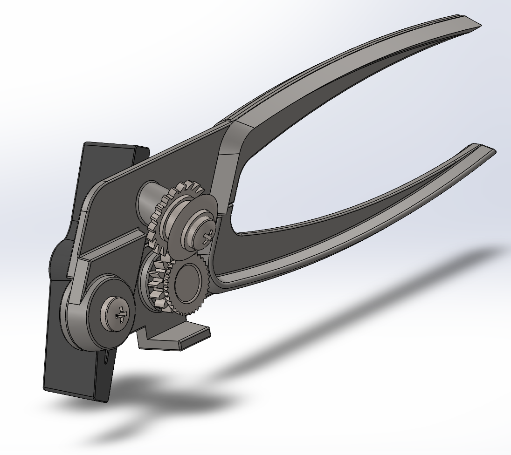
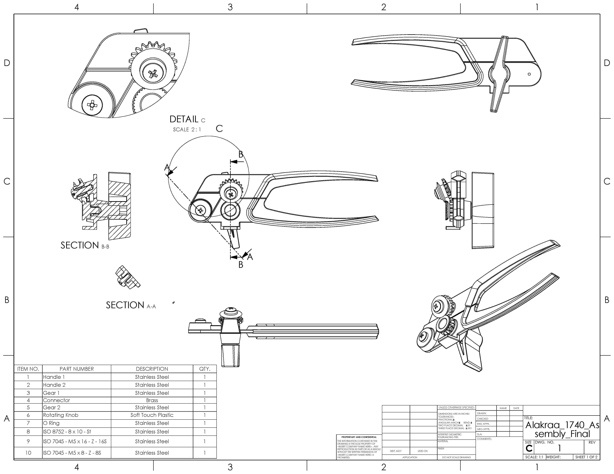
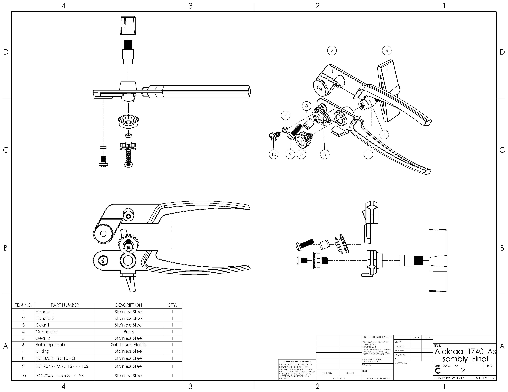

Can Opener — Mechanical Design & Documentation
A complete product-definition package for a rotary can opener — every component modeled in SolidWorks, assembled into a fully mated mechanism, and documented with a full set of industry-standard 2D engineering drawings including cross-section and exploded views.

At a glance
The brief: produce a complete product definition to industry standards — coherent 3D part models, a fully constrained assembly, and a 2D drawing package for the most complex components plus the full assembly. The deliverables follow ASME Y14.5-2009 with a Critical-to-Function dimensioning scheme, meaning only the dimensions that convey design intent are called out, not every feature.
How it works
Squeezing the two handles clamps the cutting wheel against the can's rim. Turning the soft-touch knob drives a small gear (Gear 2) that meshes with a larger feed gear (Gear 1), and the resulting rotation walks the opener around the lip of the can while the wheel scores it open. The whole motion is a compact gear train: a hand input converted into controlled rotary cutting force. Capturing that interplay — handles, pivot, gear mesh, and cutting wheel — was the core modeling challenge.
Bill of materials
Ten components, with materials chosen to make the product "make sense" — structural parts in stainless steel, the connector in brass, and the grip knob in soft-touch plastic.
| # | Part | Material | Qty |
|---|---|---|---|
| 1 | Handle 1 | Stainless steel | 1 |
| 2 | Handle 2 | Stainless steel | 1 |
| 3 | Gear 1 | Stainless steel | 1 |
| 4 | Connector | Brass | 1 |
| 5 | Gear 2 | Stainless steel | 1 |
| 6 | Rotating knob | Soft-touch plastic | 1 |
| 7 | O-ring | Stainless steel | 1 |
| 8 | Dowel pin — ISO 8752, 8×10 | Steel | 1 |
| 9 | Screw — ISO 7045, M5×16 | Stainless steel | 1 |
| 10 | Screw — ISO 7045, M5×8 | Stainless steel | 1 |
Interactive 3D model
Orbit, zoom, and explore the assembly below — the real SolidWorks model, in your browser.
Drag to orbit · scroll to zoom · double-click a part to focus.
The drawing package
The assembly drawing spans two C-size sheets and includes a cross-section view (Sections A-A and B-B), a Detail C at 2:1 to clarify the gear mesh, an exploded view with balloons, and a BOM table — all dimensioned to convey design intent rather than every feature. Click either sheet to view it full-size.


Process
Model each component
Built all ten parts individually in SolidWorks — handles, the two gears, connector, knob, O-ring, and fasteners — making sound geometric decisions so the parts form a coherent product.
Assemble & mate
Constrained the parts into a fully mated assembly so the gear train and handles move as a real mechanism, with no interference.
Detail the drawings
Produced 2D drawings for the five most complex components plus the full assembly, using section and detail views and a Critical-to-Function dimensioning scheme per ASME Y14.5-2009.
Package the deliverable
Compiled the exploded view, cross-sections, and BOM into a clean, professional drawing set — a complete product-definition archive.
What I took away
This project was as much about communication as modeling: a drawing is only useful if another engineer can build the part from it. Choosing which dimensions express design intent — and which to leave off — taught me to think like the person downstream of my work. Capturing a working gear mechanism in a fully mated assembly also pushed my SolidWorks skills well beyond single parts.